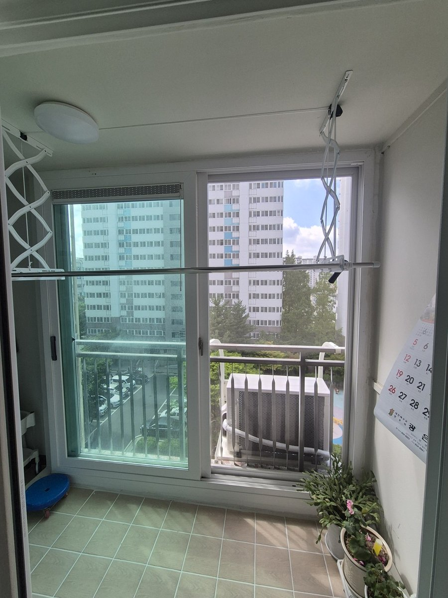
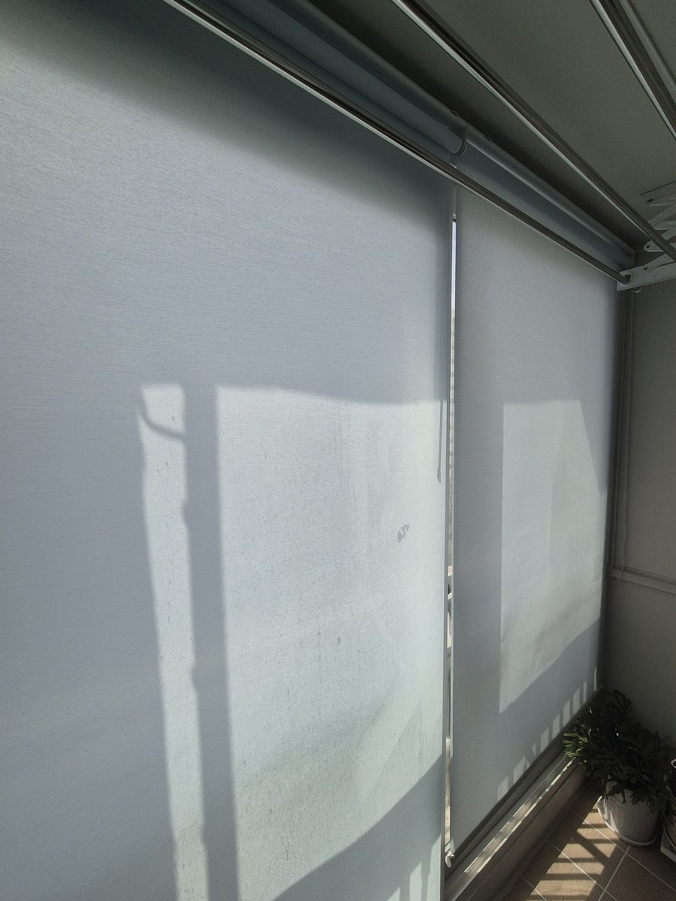
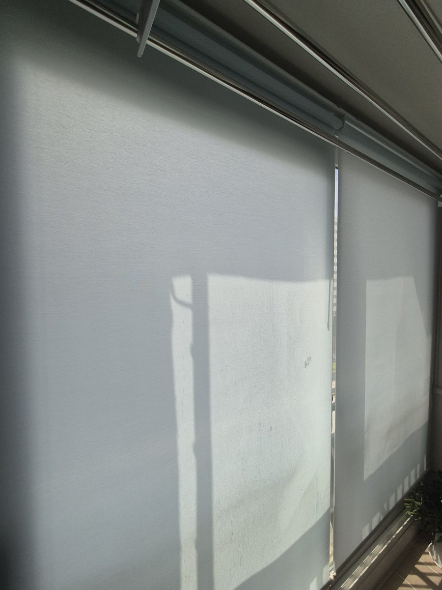
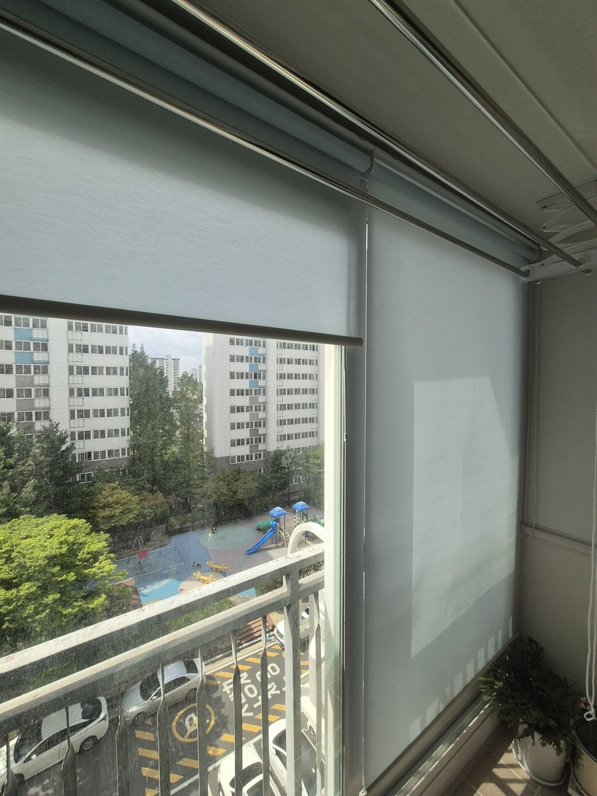
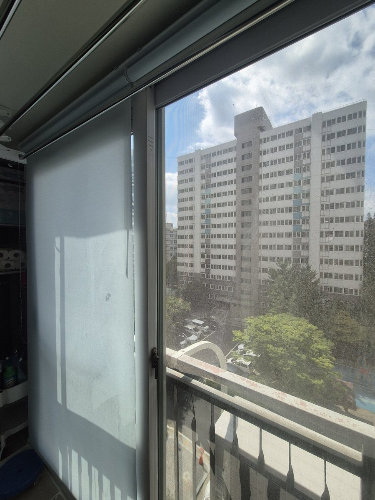
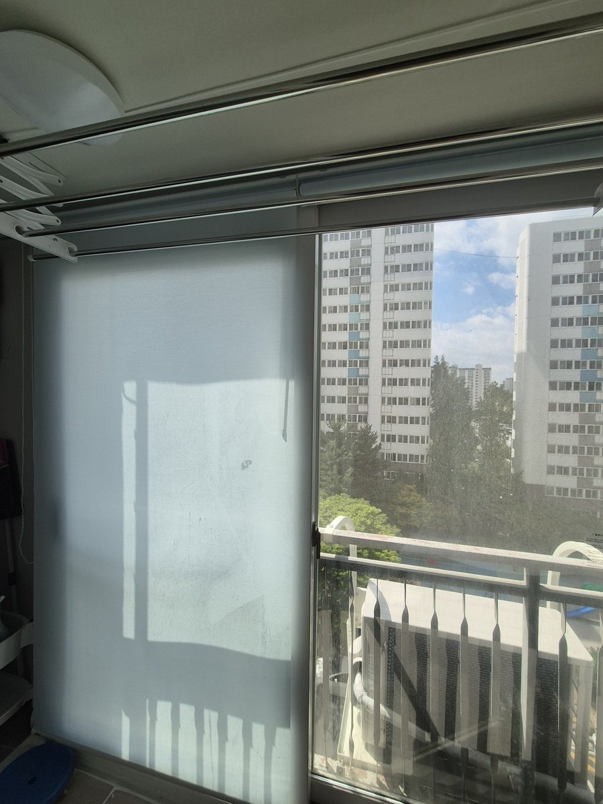

2026년 7월 23일 시공
의성 주공2단지 베란다
연블루 채광 롤스크린 시공후기

부모님 댁 베란다, 여름 한낮에 얼마나 볕이 세게 들어오는지 자주 가보지 않으면 모릅니다.
이번 의성 주공2단지 시공도 그렇게 시작됐어요.
연세 있으신 어머님이 낮에 베란다 볕이 너무 눈부시다 하셔서, 자녀분이 대신 연락을 주셨습니다.
그렇다고 어둡게 다 막아버리면 빨래도 안 마르고 답답하니, 볕은 살리되 눈부심만 잡아달라는 요청이었죠.
안녕하세요, 의성을 포함한 경북 전 지역 커튼·블라인드 출장 시공 따솜커튼블라인드입니다.
의성 담당 이실장이 주공2단지 아파트 베란다에 연블루 채광 롤스크린을 달아드리고 온 이야기를 정리합니다.
어둡게 막는 게 답이 아닐 때
베란다는 거실과 성격이 다릅니다.
빨래를 널고, 화분을 두고, 바깥 공기를 들이는 공간이죠.
그래서 암막처럼 빛을 완전히 차단해 버리면 오히려 불편합니다. 낮에도 어둑해지고 습기가 차기 쉬우니까요.

어머님 댁 베란다도 그랬습니다.
마주 보는 동과 놀이터가 바로 보이는 창이라 낮 시선과 강한 햇빛은 부담스럽지만, 볕과 바람은 그대로 두고 싶으셨어요.
이럴 때 답은 암막이 아니라 채광 롤스크린입니다.
볕은 통과, 눈부심은 컷 — 연블루 채광 롤스크린

채광 롤스크린은 원단 자체가 빛을 은은하게 통과시키면서 직사광의 눈부심과 자외선을 걸러줍니다.
내려두면 바깥은 뿌옇게 가려져 시선이 차단되는데, 실내는 여전히 환하죠.
낮에 불을 켜지 않아도 될 만큼 밝기를 유지하면서, 쨍한 볕만 부드럽게 눌러주는 게 채광 롤스크린의 장점입니다.

색은 연블루(라이트블루)로 골랐습니다.
하얀 벽과 타일에 파란기가 살짝 도는 원단이 얹히니 베란다가 한결 시원하고 환해 보입니다.
여름에 특히 잘 어울리는 색이라, 볕 드는 베란다가 답답하지 않고 청량하게 정리됐어요.
어머님 혼자서도 편하게

혼자 계신 분이 매일 여닫는 공간이라, 조작이 무겁지 않게 잡는 게 중요합니다.
롤스크린은 체인 한 줄로 올리고 내리는 방식이라 힘이 거의 들지 않아요.
아침엔 끝까지 올려 바깥을 열고, 볕이 셀 땐 내려서 눈부심만 가리는 식으로 어머님이 손쉽게 쓰실 수 있습니다.

두 폭으로 나눠 달아서, 한쪽만 올리고 한쪽은 내리는 것도 가능합니다.
창을 열어 환기할 땐 그쪽만 걷고, 볕 드는 쪽은 내려두면 되니 상황에 맞게 조절하기 편하죠.
자주 묻는 질문
Q. 의성도 출장 시공 되나요?
네, 의성은 이실장이 직접 방문 시공합니다. 주공2단지처럼 아파트 베란다는 물론 단독주택, 상가도 가능합니다.
Q. 채광 롤스크린이랑 암막 롤스크린이 다른가요?
다릅니다. 채광은 빛을 은은하게 통과시켜 밝기를 유지하면서 눈부심만 걸러주고, 암막은 빛을 거의 차단합니다. 베란다·주방처럼 밝기가 필요한 곳은 채광, 침실은 암막을 주로 권합니다.
Q. 롤스크린 말고 다른 것도 하나요?
커튼, 콤비블라인드, 롤스크린, 우드블라인드까지 모두 시공합니다. 창과 공간에 맞는 것을 골라 추천해드립니다.
마무리
멀리 사는 자녀분이 어머님 베란다 볕부터 챙기고 싶으셨던 마음, 연블루 채광 롤스크린 한 겹으로 눈부심은 걸러주고 볕은 살려 시원하게 정리해드릴 수 있어 좋았습니다.
창 전체가 나오게 찍은 사진 한 장 주시면 방문 전에 견적을 알려드립니다.
의성을 포함한 대구·경북 전 지역, 아파트·단독주택·상가 커튼과 블라인드 시공이 고민되시면 편하게 문의 주세요.
비슷한 시공이 필요하신가요?
창 전체가 나오게 찍은 사진 한 장 주시면 방문 전에 견적을 알려드립니다.
부재 시 문자를 남겨주시면 빠르게 답변드립니다.